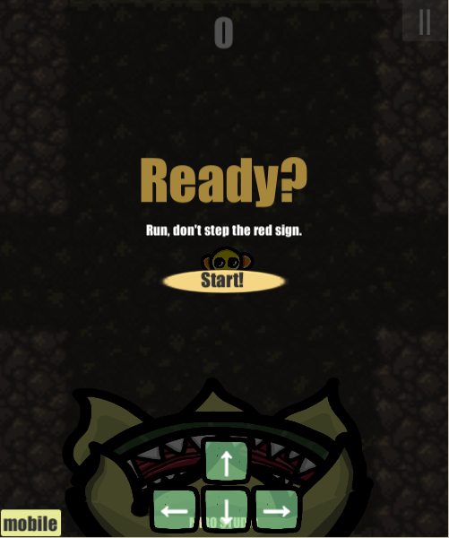
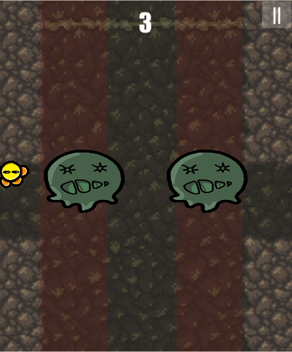
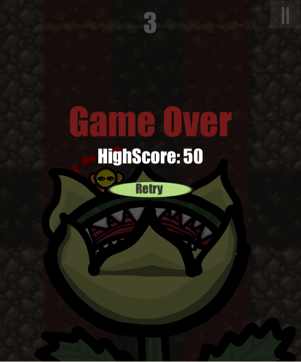

This game is endless runner game, I got an idea from the map of old Korean game called 'Tales Runner'.
It's made to be played on web, so I uploaded on itch.io, and here too.
  It took about 3 days. Warning with red tiles were hard to code for me as beginner, But I figured it out.
One of my friends wanted to play on mobile too so I made arrow key buttons for them.
If you click 'mobil' button then arrow key buttons will show up.
It was also hard to code but using button function I implemented those buttons.